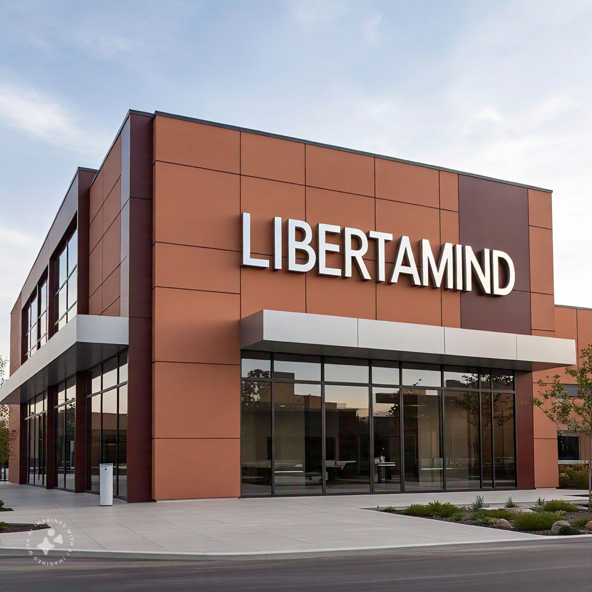
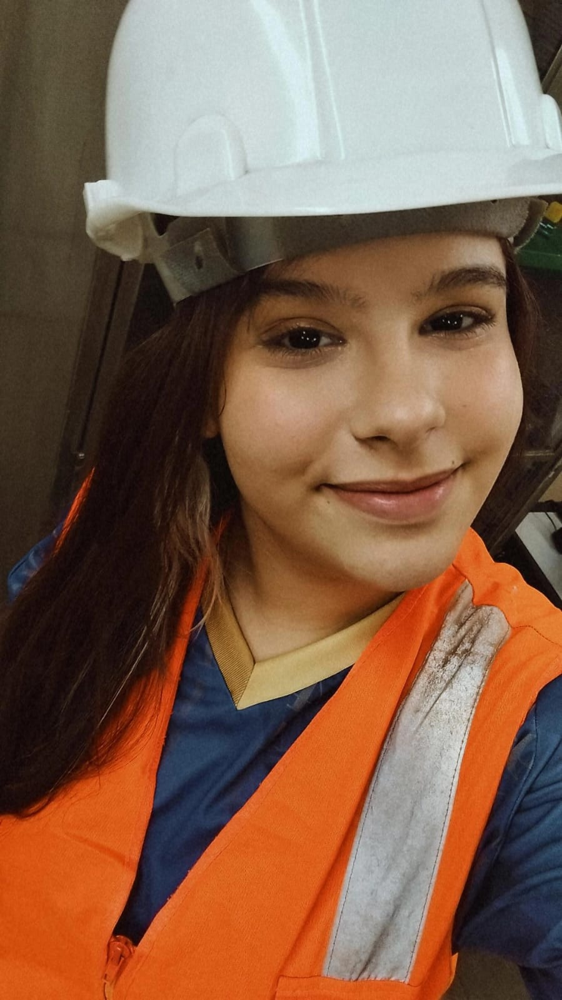
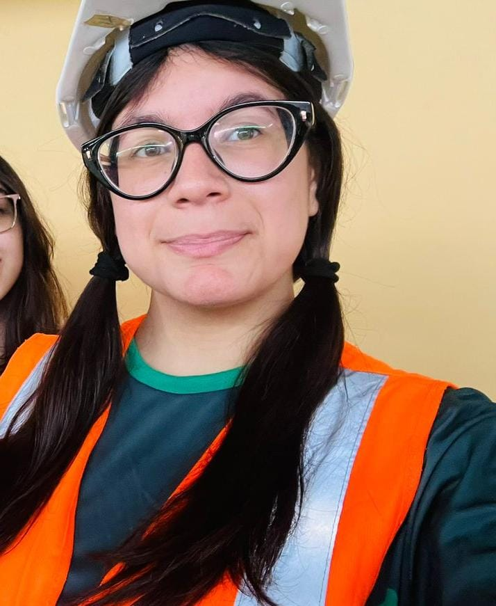
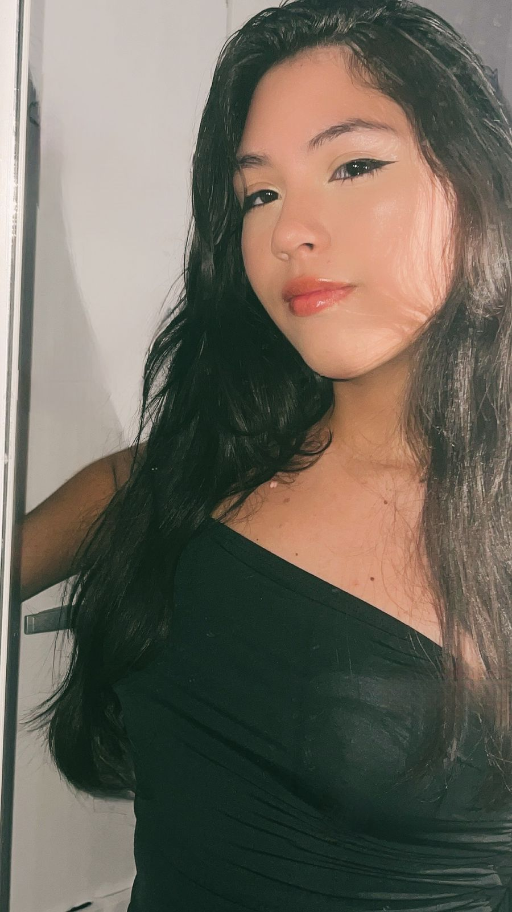
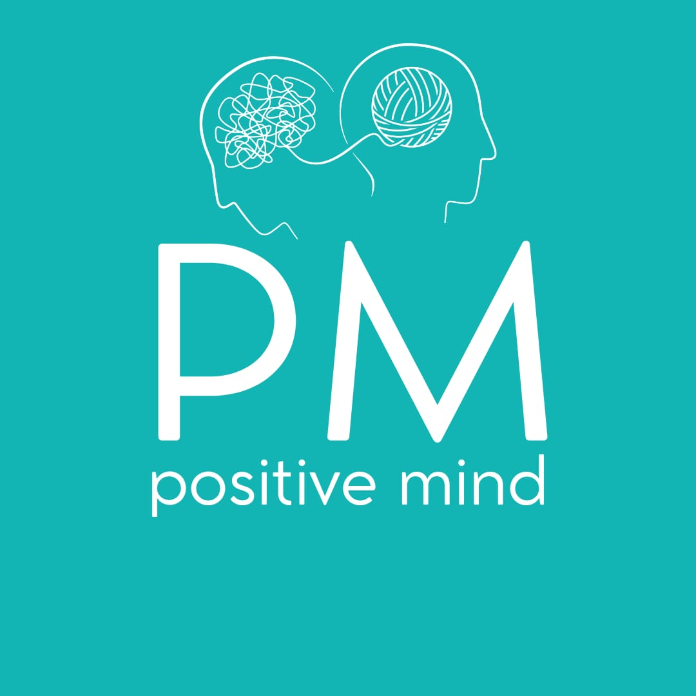

Vício não é um destino inevitável, mas uma escolha que fazemos. Apesar das dificuldades, sempre temos o poder de buscar ajuda e optar por um caminho mais saudável e positivo
A LibertaMind foi criada com o intuito de diminuir acidentes, mortes e prejuízos nas empresas causados pelos vícios em fumos e álcool.
A LibertaMind oferece diversos planos para que a sua empresa contrate o que mais se adequa aos problemas apresentados!
Contamos com apoio de empresas parceiras, que possuem profissionais especializados e experientes,buscando o melhor cuidado.
Possuímos planos que vão desde a fase inicial (conscientização e educação) até tratamentos com medicamento e internação.
São temas absurdamente presentes na atualidade por conta do fácil acesso. Muitas pessoas perdem vidas, amores, oportunidades, histórias por conta do vício. A partir do momento que se entra nessa vida, q saída é extremamente complexa, mas com o apoio e métodos corretos podemos ajudar vocês nisso!.
Rua dos Navegantes, 697
CEP: 12987-007
Bairro Jardim Novo Centro, Guaratinguetá- SP
A LibertaMind foi criada em meados de 2016 com a finalidade de levar tratamento para diminuir e dissipar os vícios em álcool e cigarros.


Fundadora e representante, trato diretamente coma área burocrática como os contratos, duração dos tratamentos e e estimativa de custo para cada caso

Fundadora e representante. Movimenta especificamente a área do etilismo, seja de forma presente no processo de cura ou gerenciando/comandando o tratamento.

Fundadora e representante. Movimenta especificamente a área de tabagismo, na linha de frente do tratamento ou gerenciando/comandando os métodos de cura.

Somos um programa focado em saúde mental, principalmente a dos trabalhadores, nosso programa tem serviços como: Avaliação e diagnóstico; Programa de prevenção; Atendimento e suporte; Ações integradas no ambiente de trabalho; Monitoramento contínuo
Colete os dados e contate nossa equipe para que possamos montar o projeto.
O tabagismo é considerado vício quando uma pessoa desenvolve dependência química e comportamental à nicotina, dificultando o controle sobre o uso do cigarro.
Caso apresente dificuldade em controlar o consumo, beba com frequência, precise de doses maiores para sentir os efeitos, tenha sintomas de abstinência (tremores ou ansiedsde), use o álcool para lidar com emoções ou continue bebendo mesmo que cause problemas em sua vida profissional, pessoal ou de saúde. Procure um profissional nesses casos.